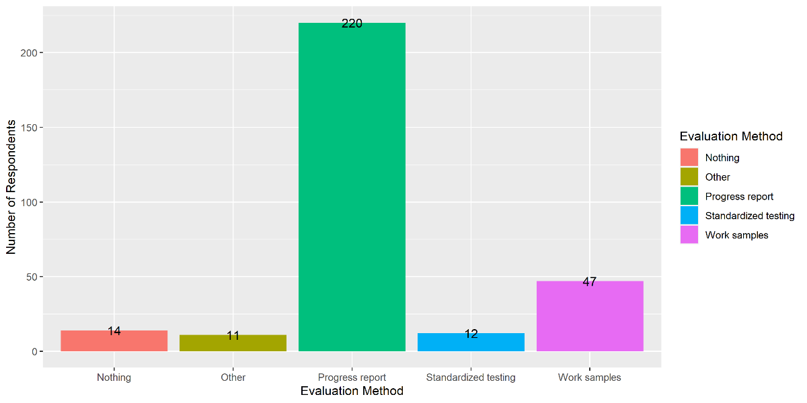

News & Events
Thank you so much if you've already responded to our year-end appeal. If you haven't there's still time to make a 2023 tax-deductible donation to AHEM! Read on...
Dear AHEM Friends,
Twenty years ago, on the floor of a gymnasium during indoor homeschool gym time, AHEM was brought to life by a group of passionate homeschooling mothers with the goal to maintain the right to independently homeschool and strengthen the grassroots presence of homeschoolers in Massachusetts. Read more ▸
The Year in Review from AHEM!
Please consider AHEM when you are making end-of-year charitable donations!
Highlights of 2023 - the 20th Year of AHEM's existence!
A trip down memory lane, or an opportunity to catch up on events and information you may have missed the first time around: Read more ▸
AHEM Questionnaire on Education Plan Submission
Got 5 minutes?
This short survey collects data about:
- the use of online forms to submit education plans
- the request for documentation beyond an education plan
- the request to
register
a homeschooled student
The more responses we get, the more meaningful the data. So take the survey and then give yourself a pat on the back for helping Massachusetts homeschoolers!
BEGIN SURVEY
Questions? Email info@ahem.info.
Thank you!
Giving Thanks 2023
In this season of giving thanks, we want to take the time to thank all of YOU who have helped AHEM over the past year by being a part of what we do, whether it be by:
- reading our emails
- filling out our questionnaire on homeschool policy and practice;
- donating money to the organization;
- shopping on our Resources page
- distributing our brochures and/or inviting us to speak to your group;
- “liking” us on Facebook;
- connecting with your legislator, and/or staying apprised of legislation;
- volunteering to be a Town Point Person;
- joining the AHEM Networking Forum.
Thanks to our volunteers! Read more ▸
A Plethora of Resources
Navigating AHEM's Website & Finding the Help You Need
Advocates for Home Education in Massachusetts (AHEM) has been helping homeschoolers in Massachusetts for two decades now. In that time, we have heard a lot of stories, answered a lot of questions, and accumulated a lot of resources. While we feel we have a lot to offer, we also understand that it can be a lot to navigate, whether you are brand new to homeschooling or an old-timer looking for the answer to a particular question.
To aid in the process, we offer the following quick guide to finding what you need on the AHEM website: Read more ▸
Homeschooling Fact Check: Pre-Approval
This week we continue our Homeschooling Fact Check
series in which we examine some of the most common questions we receive and some of the biggest myths about homeschooling in Massachusetts. If you have questions or topics you'd like to suggest for this series, you can email us at info@ahem.info.
Claim:
You need to get your education plan approved before withdrawing a child from school to homeschool.
Reading the Law:
The General Laws of the State of Massachusetts refer to a child who is being otherwise instructed in a manner approved in advance by the superintendent or the school committee
[Mass. G.L. Chapter 76, Section 1; emphasis added]. Read more ▸
Survey Results: End-of-Year Evaluations
In July, AHEM sent out a survey asking you all about your end-of-year evaluations including what form of evaluation you chose and how your town responded. We are happy to say that the situation in Massachusetts seems to be little changed in this regard. Most homeschoolers choose to submit a progress report and receive neutral or positive feedback from their districts.
Altogether we received 270 responses. The vast majority, just over 80%, of respondents reported that they submitted a progress report as their end-of-year evaluation for the 2022-2023 school year.
Meet Massachusetts Homeschoolers: The Bautistas

by Juan Bautista
As parents we always look for the best for our kids. I remember not knowing anything about homeschooling but desperately looking for some way of education other than the conventional routes that are not working and fail students over and over.
I remember meeting AHEM parents during a workshop at a hotel in Danvers, MA, ten years ago. This was a small community of parents hungry to learn from each other. That was when we found information that inspired and encouraged us to keep going on this path.
My daughter Biby is now at UMass-Lowell. She was accepted with honors and is pursuing a career in Music Education. She started by taking summer classes just to adapt to college life and to ease her own fears and ended the program with straight A's. As a homeschooler she was used to learning one subject for an entire day or reading an entire book for hours till she finished it, skills she used trying to cover her general education requirements. Read more ▸
Survey Results: Homeschool Graduates
Recently, AHEM sent out a survey asking those of you who have graduated students from your homeschool what they did next and what are doing now. We are happy to report that your homeschool graduates are thriving and are involved in some really interesting ventures.
Altogether we got 63 responses to our survey. Of these 37, or 58%, went on immediately to a four-year college. What about the others? In roughly equal numbers they entered the work force (13%), enrolled in a community college (10%) or took a gap year (11%). And there were a few with different paths -- we had one respondent each for: entered the military, enrolled in a trade school, did missions/volunteer work, started their own business, and worked as an au pair abroad.
Beyond the statistics, we asked you to brag about your graduates and to tell us what they have done that you or they are proud of. Not surprisingly, many parents took us up on this offer. Below are some of the inspiring answers we received. Read more ▸
AHEM Questionnaire on Homeschooling Policy and Practice
Every year we do surveys to see what issues homeschoolers in Massachusetts are having and how reporting requests have changed from year to year. Whether you have had issues reporting in your town or not, your responses help us. Please consider taking a few minutes to respond. Results will be published in an upcoming AHEM newsletter.
Legislative Update - September 2023
Our Massachusetts Legislature began its 193nd session on January 4, 2023. Below is a summary of bills filed this session that AHEM is following. At this time no action needs to be taken on any of these bills. Read more ▸
Homeschool Graduate Outcomes
Have you graduated a student from homeschool? We'd love to hear what they did next and what they are up to. Now is your chance to brag! If you have more than one graduate, feel free to complete the survey for each. Responses may be used in future AHEM emails and on the AHEM website and social media sites.
Student Charlie Cards 2023-2024
The MBTA issues reduced-rate Student Charlie Cards to middle school and high school aged homeschoolers for use on the MBTA system. Read more ▸
Behind the Scenes at AHEM: Summer Peeso
This series profiles the volunteer board members of AHEM who answer your phone calls and emails; keep the AHEM website updated; follow MA legislation; maintain the homeschool policy and practice database; and dream up and make happen events and programs like homeschooling workshops, Town Point People, the AHEM Networking Forum, and the Slow Homeschooling podcast.
Originally from Colorado, Summer now calls Natick home and has for the past 12 years. Read more ▸
Not-Back-to-School Events
As their neighbors buy new lunch boxes and notebooks and worry about adjusting sleep schedules and who's going to get junior off the bus this year, many homeschoolers find themselves breathing a sigh of relief. Finally, our favorite museums and parks will be less crowded again! Whether you stick to the traditional school-year calendar or take a more free-form approach, the end of summer is the perfect time to get outdoors and to fully enjoy the flexibility that homeschooling affords. Not-back-to-school events are a way to connect with others and to celebrate the freedom that homeschooling gives. Read more ▸
Overreach, Reasonable . . . or Essential?
What if your town asks for more?
Because homeschooling in Massachusetts is governed by case law, there are “gray” areas. This does not mean, however, that we are without guidance. The law itself gives guidelines for what sorts of requests towns can make.
On the positive side, Care and Protection of Charles lays out four factors that may be considered in determining whether to approve a home education plan. Read more ▸
Upcoming Presentation: The Nuts & Bolts of Homeschooling
When: Saturday, September 9, 2023, 11:00 am - 1:30 pm
Where: The Millbury Library, 128 Elm St., Millbury, MA
Pre-registration required. Space is limited. Click here to register.
Topics to be covered include Massachusetts homeschool guidelines; the history of homeschooling in MA; writing your education plan; choosing a form of evaluation; and dealing with local homeschool policies. There will be time for questions and discussion.
The presentation will be followed by a social hour for parents to network with each other. The children's librarian will be available to discuss how the library can be used as a resource for homeschooling.
This program is sponsored by the Millbury Public Library.
The program will be presented by Roberta Van Vlack. Roberta is the mother of four children who were always homeschooled. Two are college graduates and two are currently in college. She has used eclectic and Charlotte Mason methods in her homeschool. She's a board member of Advocates for Home Education in Massachusetts, moderates the Attleboro Area Homeschool group, and blogs about education at Letters from Nebby.
Please respect AHEM’s mission to empower individuals through education by not soliciting for your business at this event.
Connecting with Others: Town Point People
Would you like to help connect homeschooling families in your town or area? Are you wondering who is new in your area, or how you can support new families?
AHEM keeps a list of local, independent volunteers known as Town Point People (TPPs). The purpose of TPPs is social. TPPs help homeschoolers make local connections and find resources and groups near them. There are more than 300 towns in Massachusetts. The sidebar on this page lists towns we've got covered so far but there are lots more out there and we need your help to make sure all homeschoolers in MA can be connected with someone local.
If your town is listed, get in touch and we can connect you to the TPP in your town.
If your town isn't listed yet, that means we are still looking for a local contact. If you would like to find out more about being a TPP yourself, read more here.
In either case, you must be an active subscriber to AHEM emails.
Why and How to Get Connected
by Sophia Sayigh
It is one of the most beautiful compensations of this life that no man can sincerely try to help another without helping himself…
- Ralph Waldo Emerson
In this day and age, homeschoolers represent a market. There are many businesses catering to homeschoolers’ needs—or perceived needs. When first starting out it can be especially tempting to sign up for a multitude of classes or experiences rather than putting your energy into a grassroots network such as a local homeschool support group. Before you know it, your days are filled with activity and you don’t look back.
The intangibles you’d be missing out on—real connection with other homeschoolers and personal empowerment—might be some of the best kept secrets of homeschooling, as well as what would sustain you on this path in the end. It’s worth putting some time and effort in, and yes, if shy, getting your courage up, to figure out how to insinuate yourself into a group of homeschoolers, rather than filling your day with activities that leave you with a busy day void of meaningful relationships. Read more ▸
Step One: DON'T PANIC
The guidebook known as The Hitchhiker’s Guide to the Galaxy (from the novel of the same name) is said to have on its cover these words: DON’T PANIC.
If I were making a guidebook on homeschool reporting, I would take a page (pun intended) from Douglas Adams and start the same way.
Maybe your town has a new homeschool policy. Maybe they are making requests they never have before. Maybe instead of approving your education plan, they are asking for more information. Maybe you are just new and nervous about sending in your first education plan.
Whatever your situation, the first step is the same: DON’T PANIC.
What you do next may depend upon your circumstances, but here are some suggestions (in no particular order): Read more ▸
Year-End Evaluations Survey
Please take ONE minute (really!) to help other Massachusetts homeschoolers by anonymously completing this survey. Thank you for your participation!
Create your own user feedback surveyLegislative Update - June 2023
Our Massachusetts Legislature began its 193nd session on January 4, 2023. Below is a summary of bills filed this session that AHEM is following. At this time no action needs to be taken on any of these bills.
Bills regarding kindergarten
Conform to Forms: Should You Fill Out Your Town's Application?
One of the most frequent questions AHEM gets is about forms or applications. Because homeschooling in Massachusetts is governed by case law, not by statutes, there is a lot that is not clearly laid out or that is open to interpretation. The following is a republication of an article from the AHEM website which attempts to unravel one of the murkier areas. We encourage all homeschoolers to read the court decisions, which can be found on our website, for themselves. Read more ▸
Help Getting Started Homeschooling
As one school year ends and another is in view, many are considering how they will educate their children in the coming year. Whether you have been homeschooling a while or are brand new to it, the AHEM website has everything you need to get started homeschooling in Massachusetts.
The first step to start officially homeschooling is to submit an education plan to your local school superintendent or school committee. Traditionally, this has been done via a certified letter sent to your local superintendents' office though many towns will now also accept emailed plans (it doesn't hurt to send it both ways). If you are withdrawing your child mid-year, you may also want to notify the school that your child won't be returning.
It is important that all homeschooling parents know their rights and responsibilities. We encourage everyone to educate themselves on the laws and what they do and don't require. Our mission at AHEM is to provide you with the resources to empower yourself. A great place to start is to review the following pages:
- Homeschool Guidelines at a Glance
- Tips for Writing Your Education Plan
- Sample Education Plan
- Methods of Evaluation
- FAQ
Also, remember, kindergarten is not mandatory in Massachusetts. Compulsory attendance is in effect from ages 6 – 16. You only need to submit a plan for Fall 2023 if your child has turned or will turn 6 in 2023.
If, after reviewing these pages, you still have a question, we are here to help.
Field Trip Survey Results, Part 2: Science & Nature
Last time, we shared your field trip recommendations for museums and historical sites. You also gave us so many great suggestions for science and nature based field trips that we thought they deserved their own list. Read more ▸
Field Trip Survey Results, Part 1: Museums & History
Recently we asked for your field trip suggestions across New England. Many of you responded, telling us your favorites and your hidden gems. Since we got so many good responses, we will present the information in two sections. Today we begin with museums, historical sites, and more. Stay tuned for everything science and nature in a future edition.
How often do you go?
One of the biggest advantages of homeschooling is the freedom it gives to explore new places, and to do so at off-peak hours. So how often are homeschoolers in Massachusetts getting out there? We found that there is really a range—80% of you are getting out there anywhere from once a week to once a quarter. Some only manage a field trip a few times a year (15%) but some diehards (5%) are getting out more than once a week!
Where do you go?
With history all around us, lots of natural beauty, and tons of culture, there is no shortage of field trip options in New England. So where are you going?
Most Recommendations
The big winner in our survey — Read more ▸
Frequently Asked Questions: End-of-Year Evaluations
It's that time of year. Many of us are finishing up one school year and thinking about reporting for the next. Whether this is your first year reporting or you are an experienced homeschooler, AHEM has answers to all your evaluation questions.
What forms of evaluation are acceptable?
CARE AND PROTECTION OF CHARLES & others, 399 Mass. 324 (1987) says that school officials and parents should agree on a method of evaluation that may include one of the following approaches: standardized testing, periodic progress report, or dated work samples. Other methods of assessment, if mutually agreed upon by parents and school officials, are also allowed.
How often do I need to send an evaluation? What is my town asks for a mid-year report?
Field Trip Survey
Do you have a favorite field trip? A hidden gem your family has enjoyed that you'd be willing to share? We'd love to hear from you. Share your experiences exploring New England and we will share the results in an upcoming newsletter.
Responses may be used in AHEM emails and shared on the AHEM website. Responses may also be edited for space and content.
Create your own user feedback surveyConnecting with Others: Town Point People
Are you looking to connect with others in your town? Would you like to meet more people and to help local homeschoolers?
AHEM's Town Point People (TPPs) are local contacts who help homeschoolers make connections and find resources and groups near them. We've got over 50 towns covered so far but with over 300 towns in Massachusetts there are a lot more out there and we need your help to make sure all Massachusetts homeschoolers can be connected with someone local.
If your town is listed, we can connect you with the TPP in your town.
If your town isn't listed, we are still looking for a local contact. Read here if you would like to find out about being a TPP yourself.
In Praise of Park Days
By Roberta Van Vlack
Park days have long been a staple of my family’s homeschooling life. With four kids, these informal, weekly gatherings have provided everyone (even mom) with an opportunity to make friends and socialize in a way that no co-op we found ever could. Park days were the one constant in our schedule from year to year. (My high school age daughter did the recorded version of Spanish 3 because the live class would have interfered with park day. One has to have priorities, you know.)
Park days are a melting pot. Homeschooling in Massachusetts attracts a pretty diverse group of people, and the families at our local park day have come from all different backgrounds and perspectives. I have seen the same scene countless times -- kids of different genders and ages running around together. And not just running but playing organized games without any adult input. If you have doubts that homeschoolers can be properly “socialized,” this is the place to go to put those doubts to rest. In my experience, homeschooling kids are incredibly patient and accepting of others who are different in any way. They are used to being with kids who don’t fit the usual mold.
If all that doesn’t convince you, how about this: park days are for parents too. You can post online all you want but nothing compares to getting together with other homeschooling parents for some actual mid-day adult conversation. Read more ▸
Maintaining Homeschool Freedom
What’s at stake?
Homeschooling is still sometimes misunderstood by conventional educators, legislators, homeschoolers’ friends and relatives, and the general public. Homeschooling is not school at home. That is not why it works or what makes it valuable. The strength of homeschooling is that it allows a diversity of families to teach theirchildren in the way that is best for them, with the flexibility to meet children’s changing needs.
Would a statute serve us better than the current case law? Why can’t all homeschoolers in Massachusetts participate in school activities? Shouldn’t we get vouchers or tax credits to defray the cost of homeschooling? Below, we consider whether these ideas would expand or diminish homeschooling freedom. Read more ▸
Your Best Homeschooling Memories
Inspiration from Your Fellow Homeschoolers
We asked you to share with us your best homeschooling memories—field trips, books, projects, and just snapshots from daily life. So many of you responded that it is going to take us at least two newsletters-worth to share all your wonderful responses. A big thank you to all who contributed. We at AHEM were inspired and we hope that you will be too.
“Endless days at the pool and our favorite parks”
– my Five
“My favorite memory of homeschooling my son is a field trip to a local park for a science lesson! He loved being outside and in nature for school!”
– Andrea from Gardner
“When my in-laws, who are public school and were suspicious of homeschooling, told me I was doing an amazing job, and bragged to others about it.”
– Lizzie from Framingham
Reading the Massachusetts Homeschool Laws
At AHEM, our mission is to empower you as the homeschooling parent. While we are always happy to talk through issues you may be facing, our goal is to give you the tools you need to advocate for yourself. The AHEM website is chock full of resources to help you do just that.
As you educate your children, we encourage you to also educate yourself. Reading through case law may not be something you have ever done before and the task may seem daunting. We are here to help. In this short piece we talk about who should read the laws and why, what they consist of, and how to read them. Read more ▸
Your Best Homeschooling Memories
Inspiration from Your Fellow Homeschoolers
Last month we asked you to share with us your best homeschooling memories -- field trips, books, projects, and just snapshots from daily life. So many of you responded that it is going to take us at least two newsletters-worth to share all your wonderful responses. A big thank you to all who contributed. We at AHEM were inspired and we hope that you will be too.
“Endless days at the pool and our favorite parks”
– my Five
“My favorite memory of homeschooling my son is a field trip to a local park for a science lesson! He loved being outside and in nature for school!”
– Andrea from Gardner
“When my in-laws, who are public school and were suspicious of homeschooling, told me I was doing an amazing job, and bragged to others about it.”
– Lizzie from Framingham
AHEM Needs YOU!
Your skills, expertise, and helping hands!
AHEM is “staffed” by a handful of currently homeschooling or formerly homeschooling parent volunteers. To stay viable, we need young families with skin in the game who care about keeping independent homeschooling as an educational option to step up and help out if Massachusetts homeschoolers are to keep the right to homeschool the way they want to homeschool.
Several virtual opportunities are available:
- URGENT NEED: Help Monitor Upcoming Legislation - Assist in keeping an eye on state-wide legislation that may affect homeschooling. Request more info
- Town Point Person - As a town point person you would be a contact in your town for homeschooling families, new and established, trying to connect with others locally. More info here.
- Write Meet Massachusetts Homeschoolers piece - We are seeking pieces for our Meet Massachusetts Homeschoolers feature. This is a great chance to talk about yourself, what makes your homeschooling unique. We welcome writing by children, teens, and adults. More info here.
- Train to be a County Contact - Are you an experienced homeschooler looking to help others? Our county contacts respond to inquiries from homeschoolers across the state. We will train and equip you to help with this important part of our mission. Fill out our volunteer application.
If you are interested in any of these opportunities, or have another skill or talent you think would be valuable to share, please get in touch or fill out our volunteer application today. We are more than happy to give you details. Thanks so much for considering!
AHEM BoardSophia, Sarah, and Roberta
Help Getting Started Homeschooling
With the new year, we see a number of people looking to make a change in their children's education. It may be that you are considering homeschooling your own children or maybe you have a friend that is starting to ask about the process. Either way, the AHEM website has everything one needs to get started homeschooling in Massachusetts.
The first step to start officially homeschooling is to submit an education plan to your local school superintendent or school committee. Traditionally, this has been done via a certified letter sent to your local superintendent’s office though many towns will now also accept emailed plans (it doesn't hurt to send it both ways). Either way, be sure to get a receipt. If you are withdrawing your child mid-year, you may also want to notify the school that your child won’t be returning.
Also, remember, kindergarten is not mandatory in Massachusetts. Compulsory attendance is in effect from ages 6 – 16. You only need to submit a plan for the 2022-2023 school year if your child turned 6 in 2022. You would submit an education plan for the 2023-2024 school year if your child turns 6 in 2023. Read more ▸
Homeschooling Fact Check
Top Myths Debunked
AHEM's Homeschooling Fact Check examines some of the most common questions we receive and some of the biggest myths about homeschooling in Massachusetts.
Questions we have answered include: Read more ▸
Tell Us Your Homeschooling Story

We want to hear your story
We've had great feedback about our Meet Massachusetts Homeschoolers series. Every homeschooling journey is unique. Maybe you have a story about why you decided to homeschool or how you educate. Maybe there is that one field trip or project that you think could inspire others. Or maybe you just want to share a day in the life of your family. Whatever your homeschooling story, we'd love to tell it in our Meet Massachusetts Homeschoolers series. (There is no age limit—stories from and by kids are welcome!)
If you are interested in submitting your story, here are the guidelines:
- 500 – 750 words.
- You can make your own deadline or ask for one.
- The piece will be published at the discretion of AHEM and is subject to editing.
- The writer will see/can approve the edited version before publication if desired.
- If published, the piece may appear in an AHEM email and on our website.
- You will retain your copyright to the piece.
Questions or ready to send us your piece? info@ahem.info.
Explore past pieces for inspiration. Read more ▸
Your Progress Report Questions Answered
This time of year we begin to receive questions about progress reports. Some are already worrying about what they will submit at the end of the year; others are being asked for a midyear report.
Progress reports written by the parent are an acceptable form of evaluation.
In Massachusetts, homeschooling parents, as the teachers of their children, are responsible for evaluating their progress. CARE AND PROTECTION OF CHARLES & others, 399 Mass. 324 (1987) clearly outlines three forms of evaluation: “Other means of evaluating the progress of the children may be substituted for the formal testing process, such as periodic progress reports or dated work samples, subject to the approval of the parents.” (Charles at 340) Parents may choose one of them to fulfill their responsibility. Read more ▸
Homeschooling Fact Check: Materials and Resources
This week we continue our Homeschooling Fact Check
series in which we examine some of the most common questions we receive and some of the biggest myths about homeschooling in Massachusetts. If you have questions or topics you'd like to suggest for this series, you can email us at info@ahem.info.
Claim:
It is sufficient to give a very general list of materials in your education plan; your town isn't entitled to specific titles or the names of resources.
Reading the Law:
The Care and Protection of Charles says: Read more ▸